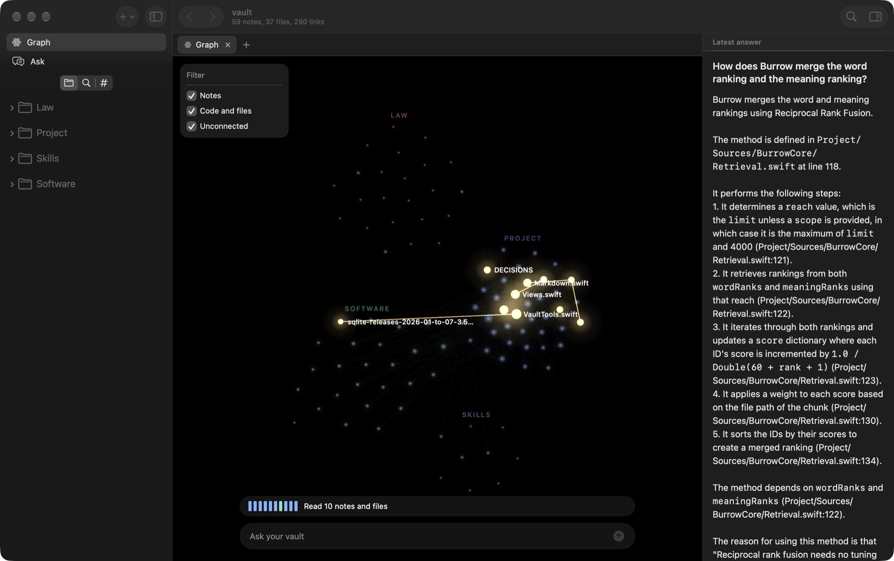
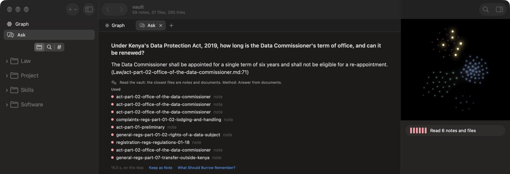
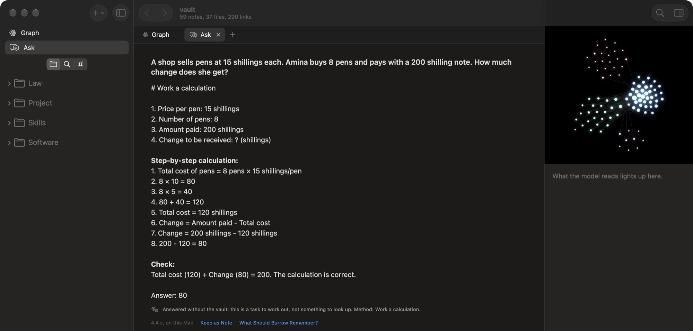
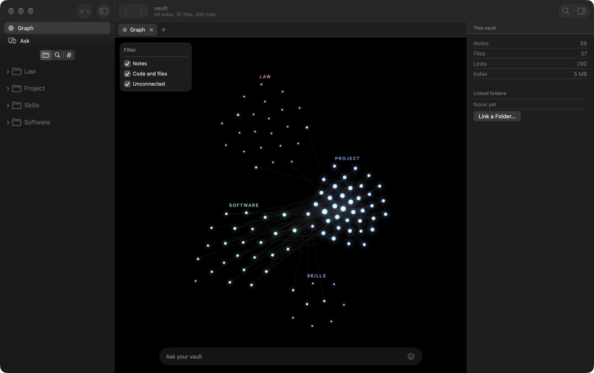

Burrow keeps your notes, documents and code in a folder on your computer, and reads the right parts to the model you run yourself.
curl -fsSL https://github.com/Satasdin/CAMR/releases/latest/download/install.sh | shmacOS 14 or later, Apple silicon. Free. Nothing leaves your computer.

of 120 questions a local model answered right, alone and then with Burrow
of 50 maths problems, because Burrow leaves your files out when they would not help
is Burrow's own part of an answer. The rest is your model reading and writing
Measured with Gemma 4 12B on a consumer laptop, on law, 2026 software notes and a private project. See every answer.
Each statement names the file and line it came from, and the files light up on your map.

Burrow decides for each question whether your memory will help. A sum goes straight to the model.

Plain Markdown in a folder you own, joined by the links you already wrote. An Obsidian vault works as it is.

One click, then move Burrow to Applications.
Download for MacBurrow is not signed with Apple yet. On first open, macOS will stop it. Go to System Settings, Privacy & Security, and choose Open Anyway. Or install the app with the Terminal command.Installs the burrow command. Add --app for the desktop app too.
curl -fsSL https://github.com/Satasdin/CAMR/releases/latest/download/install.sh | sh -s -- --appollama pull qwen3-embedding:0.6bollama pull gemma4:12bburrow index ~/Notes --vault